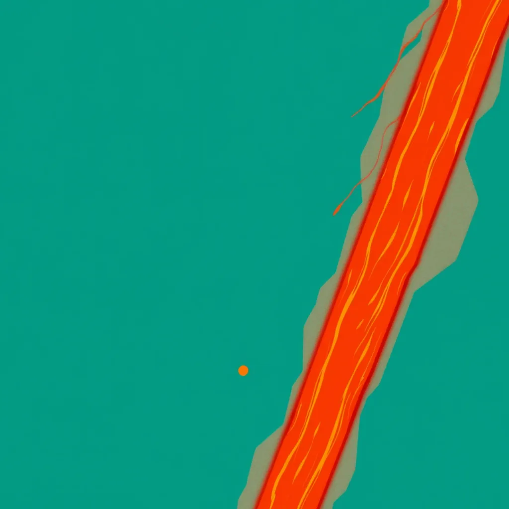

First Light ·
a solder joint glowing as it cools to a bright bead, a blast furnace tapped, molten iron glowing as it runs down the sand channel across the casting floor
The wire melts into a bright bead and tightens. It holds the copper until the color shifts from white to blue, then settles into a dark, heavy circle on the metal. Through the kiln's spy-hole, the world turns blindingly white, and suddenly the floor shudders as molten iron spills down the sand channel. The heat hits the glass and cracks it into a spiderweb of light. Back to the bench, the bead is still there, smoking slowly. A drop of flux hangs from the tip of my tweezers, trembling. It falls and fuses with the first wire end, pulling them together. The second drop follows, then the third, each one shrinking as it cools. The storm ripples across the table but does not break the joint. My thumb presses down on the new connection while the smoke rises up.
How this piece was made
- 01Poem written byQwen3.5 9B recorded
Local model on one RTX 3070 Ti. It also critiques its own drafts and rewrites up to five times.
- 02Image prompt written byQwen3 8B from pipeline history
Local model. It reads the poem and writes the picture brief.
- 03Image rendered byFLUX.1 [schnell] from pipeline history
Local diffusion model on the same GPU. Several candidates per poem.
- 04Image chosen byClaude Fable 5.1 from pipeline history
Claude, running as the corporation's blind art-critic. It scores every candidate and never writes a prompt.
- Poem drafts
- 7 of 7
- Poem self-score
- 5/10
- Image candidates
- 4
- Judge’s score
- 4/10
- Selection
- Highest-scoring on-subject candidate (did not clear the judge’s bar outright)
The image brief the local model wrote
A bold flat-colour screen-print poster, saturated and high-contrast, made of broad flat shapes with hard clean edges, every shape one solid colour cut like paper, with no shading, no gradient and no glow inside any shape, no photographic detail, no soft focus, no blur. Two colours own the whole image: a field of bright teal blue-green, and orange-red for every burning, glowing thing and nothing else. Seen from high above: the event itself, HUGE, fills more than half of the image and runs out of the frame, caught in the middle of happening and thrown across the picture on a diagonal, with streaks, spray, sparks or beams. The whole image is one continuous scene from edge to edge. Behind the main form one wide flat area of unbroken teal rests the eye. Small things are crisp silhouettes. The subject: A diagonal stream of molten iron pours down a narrow sand channel across a teal casting floor, glowing orange-red as it spills into a waiting mold. A tiny bright bead of solder hangs at the channel’s end, glowing orange-red against the teal. Storm light strikes the molten stream from the top-left, casting flat teal shadows. A vast teal field stretches behind the flow, resting the eye. No figures, no gradients, no markings.